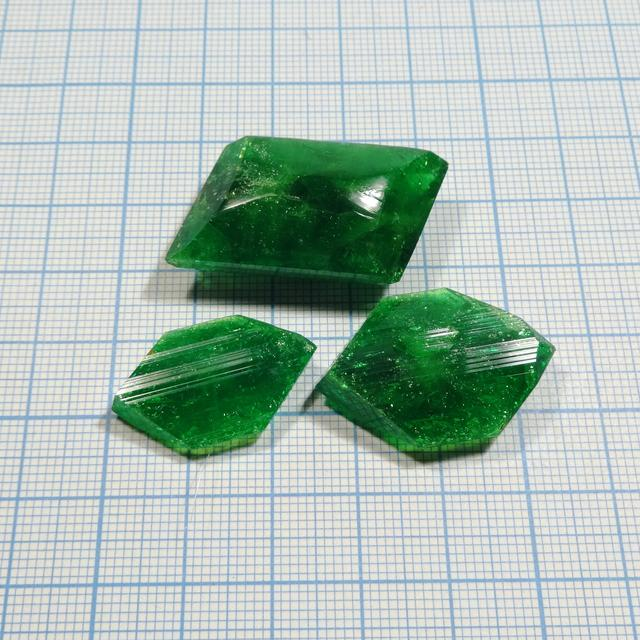

Potassium tris(oxalato) ferrate (III)
Formula: K3[Fe(C2O4)3]·3H2O 
{kind=link}
See also:
- Sodium tris(oxalato) ferrate (III): Na analog,
- Sodium Potassium tris(oxalato) ferrate (III): double salt of Na abd K with the same anion
- Sodium tris(oxalato) aluminate: Al analog
Properties
- Crystal system: Monoclynic.
- Crystal shape: Flat elongated hexagons, sticks.
- Color: Deep green.
- Stability on air: Slowly deterirated by dry air. Also, as all ferrioxalate compounds, they are slightly light sensitive.
Preparation
This is one of the standard compounds chemistry students prepare in inorganic chemistry course, there are numerous preparation procedures for it inthe internet.
I perpared it by dissolving iron (III) hydroxide in excess of oxalic acid and thenneutralizing excess acid by potassium carbonate. Overal reaction equation was:
-
Prepare iron (III) hydroxide Fe(OH)3. Oxide Fe2O3, and intermediates between them are good too, though they are less reactive. The easiest way is reaction between FeCl3 and NaOH or soda NaHCO3.
-
Dissolve Fe(OH)3 in hot oxalic acid solution, taking 3 moles of acid per 1 mole of Fe(OH)3. This would produce dark greenish-brown solution of iron (III) oxalate
-
Neutralize excess of acid with KOH or soda. Brown solution would turn bright green - color of the complex ion [Fe(C2O4)3]3+. Filter it and crystallize the compound from it.
Total equation is:
2Fe(OH)3 + 6H2C2O4 + 3K2CO3 → 2K3[Fe(C2O4)3] + 6H2O + 3CO2
Growing
The compound grows easily, using either evaporation or cooling method; my samples were grown using evaporation approach. Crystal shape seems to be strongly affected by impurities, present i nthe solution: excess acid, potassium oxalate and others. Depending on impurities compoistion, shape could change from flat hexagons to thin sticks or prismatic crystals.
Safety
The compound is not especially dangerous, but significant amounts of oxalates could cause poisoning.
References
- Wikipedia: sodium ferrioxalate
- K and Na salts and more theory on chem.pieceofscience.com